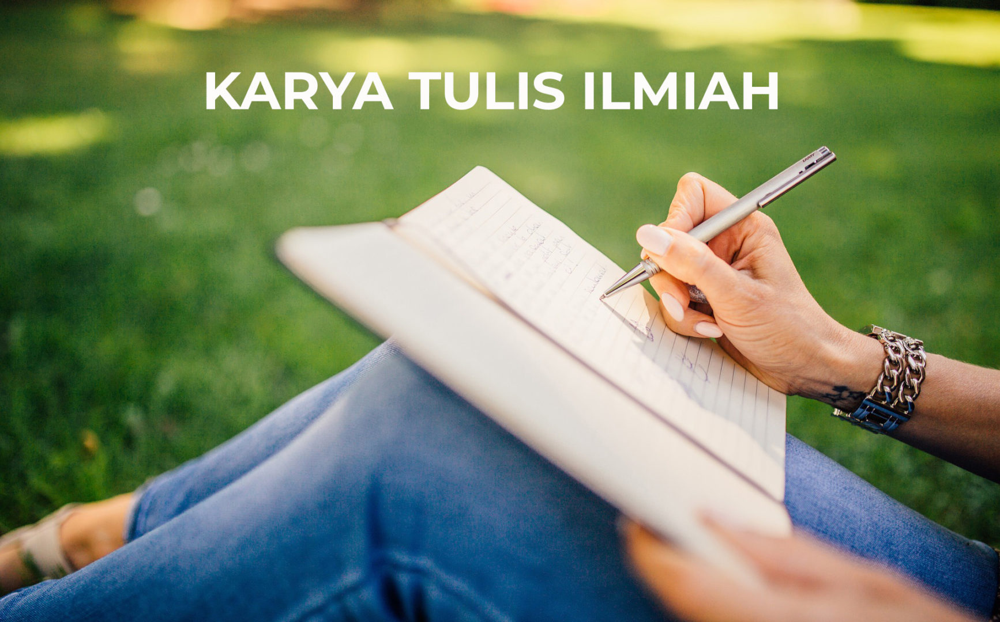

Bahasa Indonesia Kelas 11

Selamat datang di pembelajaran Bahasa Indonesia. Disini, kami akan menuliskan rangkuman dari materi Karya Tulis Ilmiah yang sudah disampaikan di kelas.
Karya Tulis Ilmiah
Pengertian
Karya tulis ilmiah adalah tulisan atau laporan tertulis yang memaparkan hasil penelitian atau kajian suatu masalah oleh seseorang atau kelompok dengan memenuhi kaidah dan etika keilmuan.
Ciri-ciri
- Sistematis: Susunan teks dalam karya tulis ilmiah dibuat teratur.
- Logis: Isi dari karya tulis ilmiah dapat dipahami dan dibenarkan oleh akal sehat.
- Objektif: Pernyataan yang ada dalam karya tulis ilmiah didasarkan pada pandangan umum, bukan pandangan pribadi penulis.
- Faktual: Kebenaran karya tulis ilmiah didasarkan pada kenyataan yang sesungguhnya, tidak imajinatif.
Struktur Karya Tulis Ilmiah
- Judul. Judul karya ilmiah dibuat berdasarkan topik yang akan dibahas. Pembuatan judul ditulis semenarik mungkin, namun tetap efektif dan menggunakan kata-kata sesuai KBBI dan PUEBI.
- Abstrak. Abstrak adalah ringkasan dari keseluruhan isi yang dibahas dalam karya ilmiah. Abstrak umumnya dibuat kurang lebih hanya 250 kata dan menggunakan bahasa yang efektif serta informatif.
- Pendahuluan. Terbagi menjadi empat subbab yaitu latar belakang, rumusan masalah, tujuan penelitian, dan manfaat penelitian.
- Kerangka teori. Memuat landasan teori yang berisi konsep yang menjadi dasar penelitian dan hipotesis penelitian atau kesimpulan sementara.
- Metode penelitian. Metode penelitian sendiri adalah langkah-langkah yang digunakan oleh peneliti untuk mendapatkan hasil yang valid.
- Pembahasan. Proses penelitian yang dilakukan bisa dituliskan di bagian pembahasan. Pada bagian ini, kita juga akan menjelaskan hasil didapatkan dari penelitian yang dilakukan.
- Penutup. Pada bagian ini, peneliti memberikan kesimpulan tentang hasil penelitiannya dan saran dari penelitian tersebut.
- Daftar Pustaka. Daftar pustaka merupakan tempat untuk menaruh semua sumber referensi yang digunakan dalam penelitian.
Kaidah Kebahasaan Karya Tulis Ilmiah
- Menggunakan kata impersonal. Kata ganti yang dingunakan harus bersifat umum, seperti penulis atau peneliti.
- Menggunakan kata baku. Penulisan karya tulis ilmiah harus menggunakan kata baku, sesuai KBBI.
- Menggunakan kalimat efektif. Dalam penulisan karya tulis ilmiah, hindari penggunaan kata atau frasa yang berulang tanpa alasan yang jelas.
- Menggunakan bahasa denotatif. Bahasa denotatif adalah bahasa yang memiliki arti dan makna sebenarnya. Jadi, makna yang terkandung dalam kata harus diungkapkan secara eksplisit, untuk mencegah timbulnya pemberian makna lain.
- Hindari menggunakan opini pribadi. Karya tulis ilmiah sebaiknya tidak mencantumkan pendapat atau sentimen pribadi dari penulis.